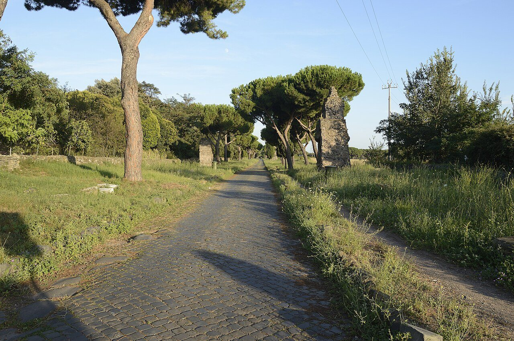
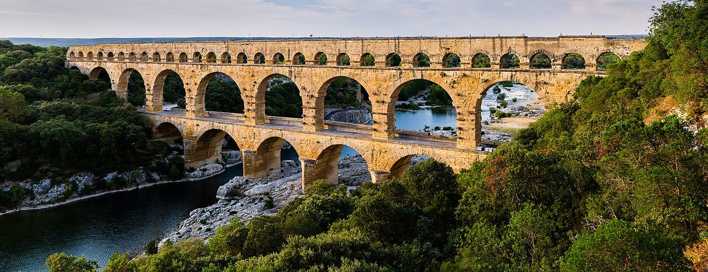
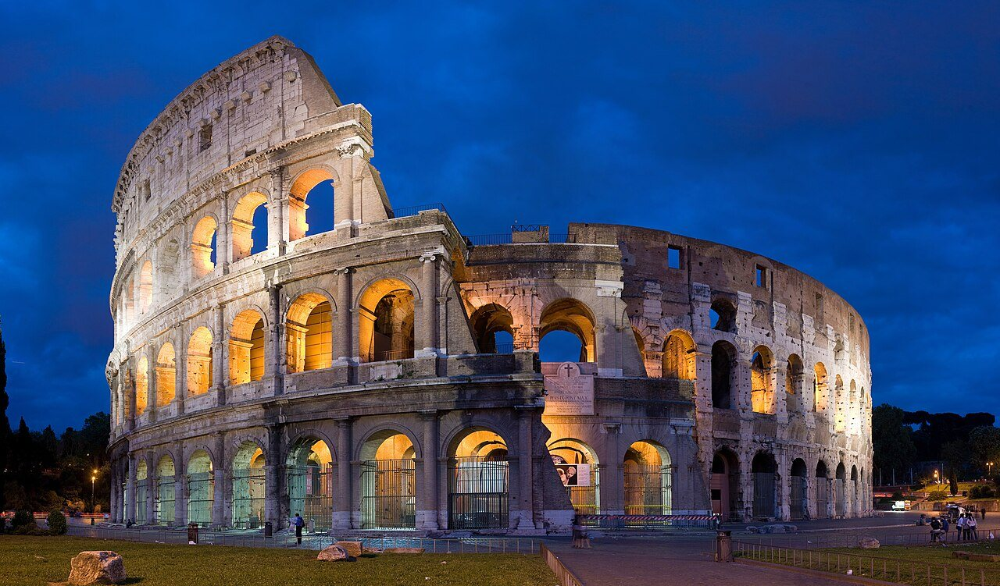
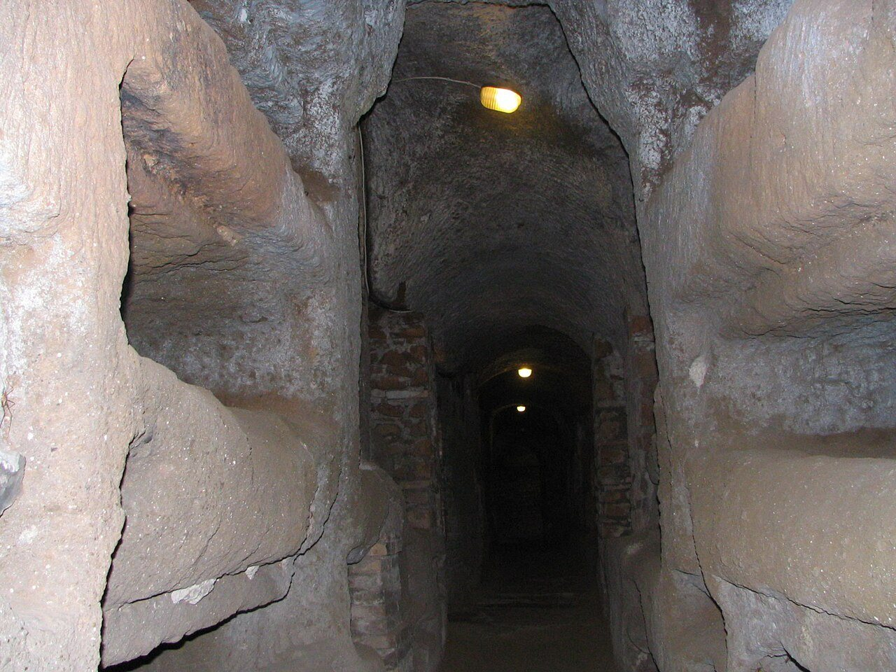
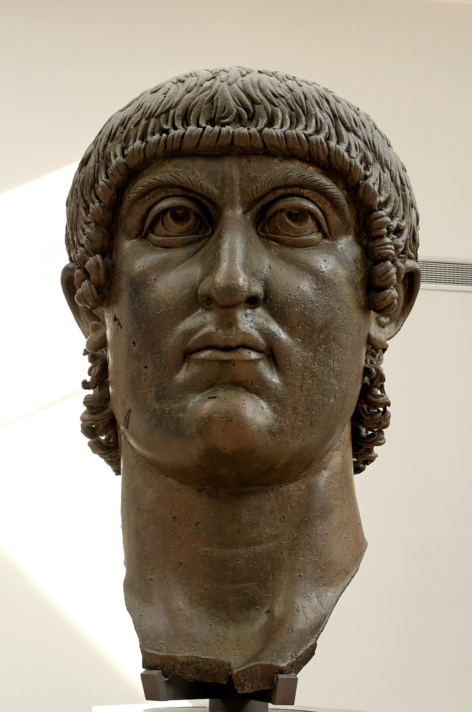

사진 · 아피아 가도
중학교 역사① · 2단원 문명의 발생과 고대 세계의 형성
길로마와 크리스트교
아피아 가도 · 사진 Livioandronico2013 · CC BY-SA 4.0
“로마는 어떻게
로마는 어떻게
그 넓은 땅을 오래 다스렸을까?
사실길, 물, 법, 시민권
해석칼만으로 다스릴 수 있었을까
확장그런데 왜 무너졌을까
SPQR
사실원로원과 로마 인민
해석왕이 없는 나라
확장공화정에서 황제의 나라로

사진 · 물을 왜 이렇게
멀리서 끌어왔을까?
물을 왜 이렇게
멀리서 끌어왔을까?
사실약 50km를 흐르는 물길
해석목욕탕과 분수가 있는 도시
확장기술이 다스림이 될 때
퐁 뒤 가르 수도교 · 사진 Benh LIEU SONG · CC BY-SA 3.0
시민이 늘어나면?
로마 시처음
이탈리아기원전 1세기
제국의 자유민212년

사진 · 공짜 구경거리는
누구를 위한 것이었을까?
공짜 구경거리는
누구를 위한 것이었을까?
사실5만 명이 들어간 경기장
해석‘빵과 서커스’
확장오늘의 빵과 서커스는
콜로세움 · 사진 Diliff · CC BY-SA 2.5
노예
사실사람 수의 상당 부분
해석노예 없는 로마가 가능했을까
확장스파르타쿠스의 봉기

사진 · 왜 땅 밑에
무덤을 만들었을까?
왜 땅 밑에
무덤을 만들었을까?
사실로마 교외의 지하 묘지
해석박해를 피해 숨어 살았을까
확장이야기와 사실을 가르기
로마의 카타콤 · 사진 GerardM · CC BY-SA 3.0
313 → 380
사실공인(밀라노 칙령) → 국교
해석박해받던 종교가 나라의 종교로
확장무엇이 바뀌었을까

사진 · 황제는 왜
크리스트교를 받아들였을까?
황제는 왜
크리스트교를 받아들였을까?
누가콘스탄티누스 대제
기록주교 에우세비우스
사실·주장하늘에 나타난 십자가 이야기
콘스탄티누스 대제의 거대 두상 · 카피톨리니 박물관 · 퍼블릭 도메인
476
사실서로마의 마지막 황제가 물러나다
해석왜 무너졌을까
확장동로마는 1453년까지
“로마가 오래 버틴 힘은 이었다.